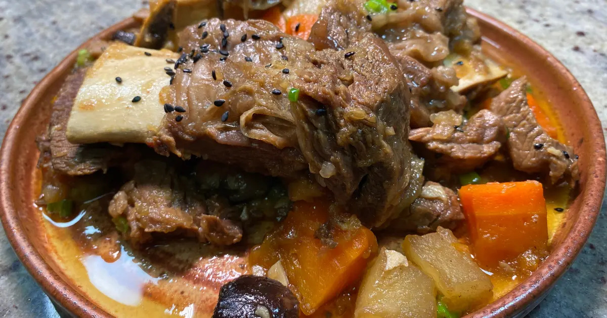

Berserker's Sweet Stewed Beef/h1>

Description
There's nothing more satisfying after a long day of adventuring than a delicious meal to end the day and this stewed beef is among the best!
Loaded with beef, garlic, daikon, and carrots, this berserker's stewed beef is an irresistable mix of sweet and savory unlike anything you've tasted before!
Ingredients
- 3 pounds beef we used some short ribs, ribeye, and filet
- 1 white onion
- 3 - 4 thin ginger slices
- 7 whole garlic cloves
- 2 scallions white halves separated from green halves
- ½ cup soy sauce
- 2 tbsp sugar
- 2 tbsp honey
- ¼ cup mirin
- ½ medium Asian pear grated
- ½ clove garlic minced
- 1 tsp grated ginger
- ½ tsp black pepper
- 10 oz daikon cut into large chunks about 1-1/2-inch cubes
- 4 dried shiitake mushrooms soaked and quartered
- 1 large carrot cut into large chunks about 1 inch long
- 6 dried dates
- 2 tbsp sesame oil
- 2 tbsp sesame seeds
Directions
- Soak your ribs in cold water for 6 hours. This will drain any remaining blood out of them. Drain out the water and pat dry.
- Over a roaring cooking fire, boil 5 cups of water and put in the ginger, garlic, white parts of the scallions (save the green parts), and half the onion. Add the meat and bring to a boil uncovered. Reduce your cooking fire or stove to medium-high for 10 minutes. Pull the meat out from the liquid.
- Remove the vegetables from the stock using a strainer or colander, then put the stock into a fridge to help the fat solidify (this isn't entirely necessary if you don't mind fatty broth).
- Put the beef and all the braising ingredients into the pot and stir for a few minutes. While its sizzling, skim off any accumulated fat from the stock in the fridge.
- Add half the stock to the pot. Cover and boil with your cooking fire on medium heat for 30 minutes.
- While it's boiling, chop up your vegetables, along with the remaining half of the onion. After the 30 minutes, throw in the vegetables and boil covered for another 20.
- Throw in the dates and the green parts of the scallions, and stir uncovered for 10 minutes.
- Drizzle with some sesame oil and sesame seeds and serve to some hungry adventurers!